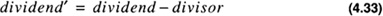

by Alan Parker
CRC Press, CRC Press LLC
ISBN: 0849371716 Pub Date: 08/01/93
|
|
Algorithms and Data Structures in C++
by Alan Parker CRC Press, CRC Press LLC ISBN: 0849371716 Pub Date: 08/01/93 |
| Previous | Table of Contents | Next |
This section presents algorithms for fixed point division. For fixed point division a 2n bit number, the dividend, is divided by an n bit number, the divisor, to yield an n bit quotient and an n bit remainder. Overflow can occur in the division process (see Problem 4.7).
Restoring division is similar to the process of grade school addition. After aligning the bits appropriately the pseudocode is shown in Table 4.8.
| if divisor < dividend | |
| { | |
| dividend = dividend - divisor | |
| place a 1 in quotient field | |
| shift dividend over | |
| } | |
| else | |
| { | |
| place a 0 in quotient | |
| shift dividend over | |
| } | |
The pseudocode in Table 4.8 is repeated until the desired precision is reached. At which point the final dividend becomes the remainder. When this simple algorithm is executed on a computer in order for it to test whether divisor < dividend it performs the subtraction
If the result is nonnegative then it places a 1 in the quotient field. If the result is less than zero then the subtraction should not have occurred so the computer performs

to restore the dividend to the correct result and places a zero in the quotient field. The computer then shifts the dividend and proceeds. This results in the pseudocode in Table 4.9.
| dividend = dividend - divisor | |
| if dividend ≥ 0 | |
| { | |
| place a 1 in quotient field | |
| } | |
| else | |
| { | |
| dividend = dividend + divisor | |
| place a 0 in the quotient field | |
| } | |
| shift over dividend | |
Problem 4.3 develops a C++ program to simulate restoring division.
Nonrestoring division is a technique which avoids the need to restore on each formation of the quotient bit. In effect, the need to restore is delayed until the final quotient bit is formed. The algorithm avoids this by noting that if a subtraction occurred that should not have then the next step in the algorithm would be to restore, then shift, then subtract.

so that
It can be seen that the (restore, shift,subtract) is equivalent to a (shift,add). This is used to avoid the restore operation and is thus called nonrestoring division. The computer does continuous shift-subtract operations until the result is negative at which point the next operation becomes a shift-add. If on the final cycle the result is negative the computer will add the divisor back to restore the dividend (which on the final cycle is the remainder).
The program to perform nonrestoring division is shown in Code List 4.15. The output of the program is shown in Code List 4.16. The program uses a similar register-saving technique to the Booth algorithm. The program performs the division of a 2n bit number by an n bit number
At the termination of the program the remainder is in R and the quotient is in Q. The program illustrates the division of 37/14 which yields 2 with a remainder of 9.
The program demonstrates a number of features in C++. The program introduces a class called number which defines the operations for the data. The class includes data and functions:
The + operator is defined first and is used in subsequent definitions of other overloaded operators. The + operator performs a ripple-carry (see Section 4.1.2) addition of the two numbers passed and returns the result as a number.
Rather than calculate the algorithm for the - operator it uses the newly overloaded + operator to calculate the subtraction by noting that x-y = x + (-y) .
The >= operator uses the newly formed - operator to return the difference in x and y as a number and accesses the most significant bit (the sign) of it to see if the difference is less than zero. It returns a value according to the test.
The < operator performs in a similar fashion.
The left_shift_add function introduces a feature of C++ not present in C. The first parameter in the function argument list is declared as number& B. As a result B is passed to the function as a pointer and is automatically dereferenced on use. See Section 3.1 for a more detailed description of pointers in C++.
Code List 4.15 Nonrestoring Division
Code List 4.16 Output of Program in Code List 4.15
| Previous | Table of Contents | Next |
){kind=link}
){kind=link}
){kind=link}
){kind=link}
){kind=link}
){kind=link}